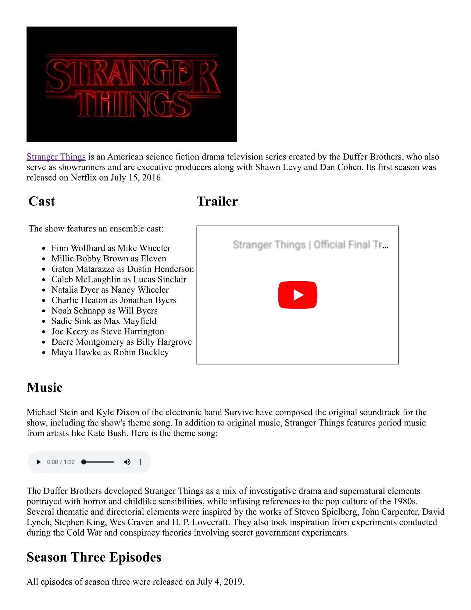
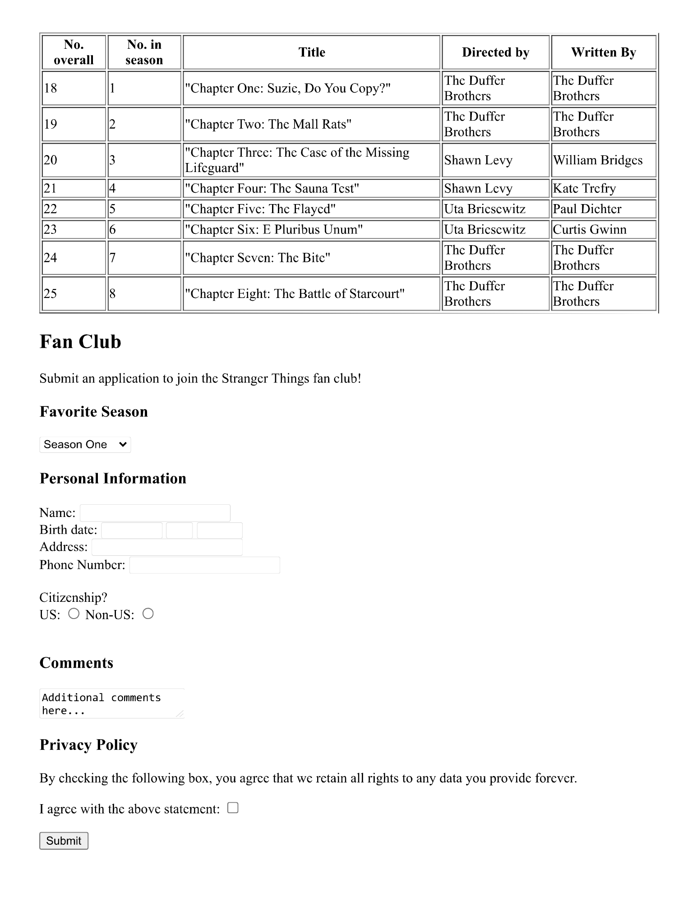

Challenge: Reverse Engineering a Webpage
Here is an image of a webpage:


(view the full-size site images here)
Your goal is to replicate the webpage using HTML! Start by forking this empty project. Then, start adding the necessary code to create your webpage!
Notes
It is not necessary to have each part of the text/content match the image exactly. The important thing is recognizing each element and creating it with HTML! The HTML Cheatsheet can be a big help.
Helpful Resources
In order to successfully recreate the site, utilize these resources.
- The Stranger Things image is here: https://upload.wikimedia.org/wikipedia/commons/thumb/3/38/Stranger_Things_logo.png/640px-Stranger_Things_logo.png
- The "Stranger Things" link at the top should navigate here: https://www.netflix.com/title/80057281
- The trailer (embedded on the page) is here: https://www.youtube.com/embed/mnd7sFt5c3A?si=aePG3SOW0tIXuF2l
- Each of the dropdowns on the page should contain the appropriate options
- "Favorite Season" should have seasons one through four
- "Birth date" should have each month (Jan-Dec), each possible day (1-31), and years 1900-2022
- The theme song is available here: StrangerThings.mp3
Text to Copy
Here is some of the text on the website that can be copied and pasted:
- For the cast: Finn Wolfhard as Mike Wheeler, Millie Bobby Brown as Eleven, Gaten Matarazzo as Dustin Henderson, Noah Schnapp as Will Byers, Sadie Sink as Max Mayfield, Joe Keery as Steve Harrington -For the music paragraph: Michael Stein and Kyle Dixon of the electronic band Survive have composed the original soundtrack for the show, including the show's theme song. In addition to original music, Stranger Things features period music from artists like Kate Bush.
- For additional information: The Duffer Brothers developed Stranger Things as a mix of investigative drama and supernatural elements protrayed with horror and childlike sensibilities, while infusing references to the pop culture of the 1980s. Several thematic and directorial elements were inspired by the works of Steven Spielberg, John Carpenter, David Lynch, Stephen King, Wes Craven and H.P. Lovecraft. They also took inspiration from experiments conducted during the Cold War and conspiracy theories involving secret government experiments. -Episode titles: "Chapter One: Suzie, Do You Copy?", "Chapter Two: The Mall Rats", "Chapter Three: The Case of the Missing Lifeguard", "Chapter Four: The Sauna Test", "Chapter Five: The Flayed", "Chapter Six: E Pluribus Unum", "Chapter Seven: The Bite", "Chapter Eight: The Battle of Starcourt"
Bonus Challenge 1
If an instructor checks your page and you have successfully completed the challenge, you can work on updating your website so that it contains information about your favorite TV show, movie, book series, or anything else! Try to keep the same general layout, but feel free to change all the information. If desired, you can also skip this challenge and move onto the next one.
Bonus Challenge 2
For this challenge, create a separate HTML page for the fan club application, and link to it from the main page. This will make things a little cleaner!
Bonus Challenge 3
For this challenge, create a "Rating" column in the episodes table, and link to a review for each episode, part, or installment.
Bonus Challenge 4
If you finish Bonus Challenge 3, you can create your own review pages for each of installment. Link to those new pages instead of the reviews. These pages should include brief descriptions of the installment, pictures, review scores, and reviews.